Author’s Note:
Welcome to my theory of knights and horses in Eyes Wide Shut. There aren't many like it—except this one dude who partially picked up on it—this one is mine. Very special thanks to Juli Kearns (Idyllopus Press), M (u/33doeyeswideshut), and M.H., the three of you have redefined how I see this film, and thereby, the world. Each one of you helped me see this light in different ways. Lastly, thank you to the mortal pain of this world, which has taught me more than any film, book, or story ever could.
This essay was written as a way to capture my love and awe of Kubrick's body of work, 13 films, each its own masterpiece and genre study. However, Eyes Wide Shut (hereafter Eyes), is his final project and to fully grasp what is at play here requires a deep familiarity with not only this film, but Kubrick's total body of work as an artist, human, and strategic storyteller, dating back to his first professional photograph at age 16 that was, importantly, shot as if it was reality when in fact was carefully staged to tell a deeper story. If you have not watched each of his films at least once, and if you've not seen Eyes at least three times, and at least once recently, I would stop right here and begin that prerequisite work.
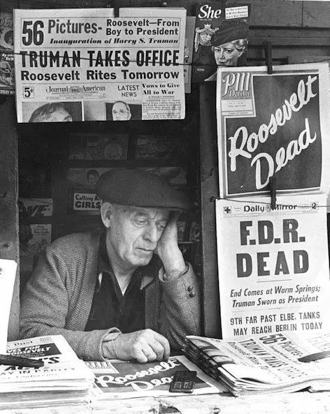
“You learn to stage situations for photographs. Waiting for something to happen can take forever, so you arrange it.”
—Stanley Kubrick, from a 1970 interview (The Film Director as Superstar)
This essay is longer than I ever imagined it would be, and I've done my damndest to stick to the primary argument for brevity's sake. For this reason, I must assume you are here because you are ready to be. There are many essays, videos, and books that explore how Kubrick layered deep meaning in his films, and whether or not he used continuity as a subtle plot device, but to prove the theory at the heart of this project, these pillars must be accepted as load-bearing.
We will build on a long persistent and unsettling theory that Helena Harford, Bill and Alice’s young daughter, was not simply left wandering alone in a crowded toy store in the final scene (for nearly three full minutes), but is instead sacrificed to the film’s ritual elite as retribution for Bill's actions. It's a bold claim, and many will disengage due to the horror of the suggestion, but I will use evidence from the film (and it's production stills) to make this case as clear as Kubrick would ever allow one to make. (If you want a brief primer on this, this is the best summation I've found, specifically from 4:26 - 6:30.)
It is a matter of fact that Bill broke the rules, and that the film's last two scenes leave both Alice and Bill emotionally devastated. By this late state, Bill has ignored three clear warnings to not speak of what he witnessed at Somerton; first, he is told by Red Cloak that if he persists in his inquiries, there will be “very dire consequences for [him] and [his] family." He is then given a second written warning when he drives back to Somerton, and told to give up his inquiries. Yet he persists, and visits the morgue to confront the corpse of the woman who sacrificed herself to redeem him. After a third and final warning (and veiled death threat) from Ziegler, Bill arrives home and breaks down into tears, promising to tell Alice everything. The consequences of his breaking these three warnings is never fully defined, but with the visual techniques Kubrick employed, the suggestion of a second sacrifice becomes impossible to ignore.
It would take a series of essays to trace the full chain of evidence behind this theory, and while I aim to capture these other keys in future essays, the horse and knight symbolism is only one part of the puzzle. For this specific essay we ask a different question: if Kubrick intended this unspoken implication, what visual mechanics would he use to encode it? To answer this, we must look back at his previous work.
Note (3/11/2026): For further reading on Kubrick's usage of the horse, which is vast, frequent, and interwoven throughout all of his films, I'm sharing the draft here as a Work in Progress entitled — A History of Horses. Once I clocked the horses of Eyes I began to see a pattern and started cataloging all of the horses and knights in Kubrick's images and films. However, falling down this rabbit hole is an essay/world unto itself and for that reason, I am sharing what I've gathered so far to further make my case. This is an unfinished project, but what I've observed already reinforces the symbolic language that reaches its fullest expression in Eyes.
Introduction

Throughout his career, Stanley Kubrick developed a symbolic language that allowed him to sidestep censors and explore taboo subjects indirectly through chess, mythology, repetition, and visual rhyme. When we trace the recurring equestrian imagery in Eyes alongside earlier knight motifs — in this essay we'll explore his use of this technique in Lolita and 2001 — a pattern emerges.
The horse, in Kubrick’s visual vocabulary, is not a purposeless decoration. Rather, the horse takes on a deep sociological importance. At its most basic form, it is a powerful, untamed beast, representing the wild power of nature. When domesticated, this powerful animal can be put to work: to carry man from point A to point B as a mode of transportation, to plow fields, and to move heavy objects. The horse also serves as a status symbol, especially strong, well-bred thoroughbreds, whose value reflects wealth, power, and lineage.
Across history the horse has functioned as humanity’s partner in conquest, agriculture, and empire. It is the animal that allowed civilizations to expand their borders and armies to move with speed and force. The horse therefore becomes more than a beast of burden; it becomes an extension of human will itself, a fusion of animal strength and human intelligence working in tandem.
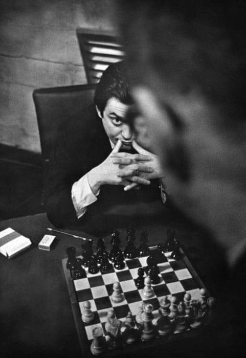
This fusion is perhaps most clearly encoded in the chess piece that gives this essay its name. The knight is the only piece on the board represented by a living creature, and the only one capable of moving in a pattern that defies the straight logic of the grid. While other pieces move in lines, the knight leaps. It advances indirectly, navigating obstacles by combining brute force with strategic cunning. In this way, the knight becomes a symbol of hybrid intelligence: the meeting point between human instinct and calculation with animal muscle and force.
Kubrick repeatedly returns to this symbol throughout his work in subtle and different ways. Horses appear as vehicles, toys, statues, paintings, and fleeting background details, quietly embedded into environments where they initially seem ornamental. Yet their presence rarely coincides with moments of innocence. Instead, the horse tends to appear at points of tension, transformation, or strategic repositioning within the narrative.
By the end of this essay, it will become clear that Kubrick is not simply placing horses into the frame for visual texture. He is using them as markers of movement and transition. The horse, and its chess counterpart the knight, become a symbolic language through which Kubrick signals shifts in power, awareness, and maturity. When read in this light, the horse begins to function as a threshold marker, quietly indicating moments when characters cross invisible boundaries.
In Eyes, these boundaries are not merely social or narrative. They are psychological and developmental. The horse marks transitions, specifically signaling the pubescent threshold between childhood and adulthood, innocence and initiation, surface and shadow.
What follows is a structural reading of Helena’s positioning within this symbolic system, and my aim is to demonstrate that the choices Kubrick made for this character are deliberate, and that Bill’s failure to understand the game he has entered carries consequences that extend beyond his own fate.
•••
Before we dive into the film itself, I want to set the table with a rare interview Kubrick gave during the press tour for Full Metal Jacket in 1987. At the time, Kubrick was living in England but still enjoyed American culture from a distance. It always stuck with me that Kubrick seemed more impressed by the minute-long beer advertisements than the NFL games he was sent from America:
“The Michelob commercials. I'm a pro-football fan, and I have videotapes of the games sent over to me, commercials and all. Last year Michelob did a series, just impressions of people having a good time, the big city at night.
And the editing, the photography, was some of the most brilliant work I've ever seen. Forget what they're doing - selling beer - and it's visual poetry. Incredible eight-frame cuts. And you realize that in thirty seconds they've created an impression of something rather complex.
If you could ever tell a story, something with some content, using that kind of visual poetry, you could handle vastly more complex and subtle material.”
Examples of this technique:
Twelve years before he began filming Eyes, Kubrick was speaking publicly and emphatically about extending these techniques into a longform storytelling method in order to deliver a kind of expression that had never been done before. An experimental film that would be able to take what Michelob did in a minute and stretch it over hours, exploring subjects and symbols in brilliant, fascinating ways. He actualized this dream with Eyes, and left us a deep, mysterious final puzzle for us to explore and understand.
With the above in mind, the volume of information Kubrick is presenting through this technique is overwhelming, and one of the reasons this particular theory has gone undiscovered for so long is the fatigue you will likely encounter with the material. For that reason, I ask that you take your time and review the evidence I'm presenting. I will attempt to be thorough, but simply cannot explore the many of the tangents that lie at the edges of this theory. There are many layers to this film, and I do not believe this theory’s layer discounts any of the great work I’ve seen from my fellow enthusiasts, and I hope this inspires the world to use this key to find other layers and keys to share.
•••
We’ll start by tracking every horse in the Harford interiors; their home, and Bill's office. Once you see where they appear — and who they’re pointed at — a hidden game comes into focus. We’ll explore the horse as a deep, layered web of symbolism conjuring the spirit of Eros, the human drive for conquest, love, creation, and self-preservation through sexuality, bonding, building, and pleasure.
This film, to some, is a one dimensional exploration of sexual jealousy. This couldn’t be further from the truth, and when one begins to understand the subtle and complex world that Kubrick created through these advanced advertising techniques, they will begin to see the film in a whole new light. The implications of this inclusion confirm that his final masterpiece was a puzzle built for the subconscious, crafted by a brilliant chess-minded strategist for an obsessive audience known for rewinding, rewatching, inspecting and admiring each frame of his movies as if they were paintings.
Part I: Cinema Screen As Mythical Chessboard
If you think about it, the movie experience itself is like a game of chess. You sit directly facing an intelligent opponent whose moves you are trying to understand, while the creative team employs strategies to advance their plot, heighten your emotions, and surprise you. In this sense, the screen itself works as a chessboard and the visual game being played becomes a back and forth between the intelligence of the director and that of the audience.
Kubrick was a lifelong chess player and made subtle and direct references to the game throughout his work. Chess is a game that benefits players who remain patient, strategic and disciplined under time, observation, and pressure. The game itself is not only an expression of mechanical intelligence, but also of a deceptive intelligence and cunning nature. You are trying to outsmart someone who can see every move that you make, and if you telegraph your strategy, you risk being caught, trapped, and put into a losing position.
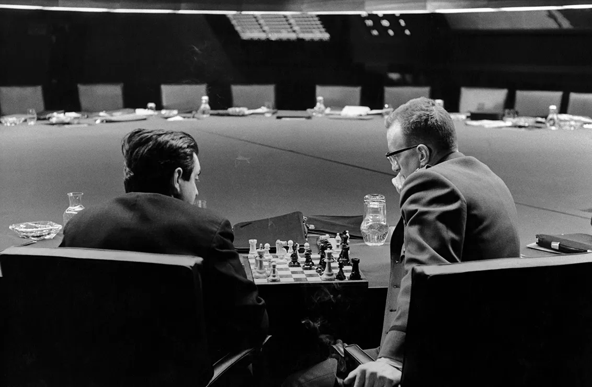
Eventually, if one plays enough chess, one begins to “think in chess” and apply the game’s lessons and strategies in their own lives. Seeing the world through this lens, one begins to analyze their opponents moves looking for wisps of threats, possible vulnerabilities, strategic opportunities, and logical oversights.
Similarly, Kubrick’s love of ancient Greek myths provided him a rich understanding of the earliest stories known to man. Every story we’ve ever heard in our modern world has been informed by the archetypes and lessons from this rich source of history, but Kubrick employed these symbolic characters and ideas in powerful ways, deftly threading references to the world of mythology throughout his body of work. Applying these conceptual frameworks to his storytelling vision helped Kubrick deepen his narratives by conjuring these varied ancient energies in his modern stories.
Kubrick was said to have demanded “complete total annihilating artistic control” over each creative decision and every technical aspect of the film making process. He picked the stories he wanted to tell, helped rewrite them as scripts, rewrote the scripts on set on the fly, filmed, produced, assisted editing, picked the music, and famously even controlled the marketing materials for his releases. Throughout each of these interventions, he used these varied opportunities to introduce and reinforce the techniques he was developing from different angles, impregnating this film with microadjustments that enforced his vision.
Twenty six years later, Eyes still holds the world record for longest movie shoot in history, providing Kubrick the time and space he needed to work this symbology into each aspect of his vision. During this long shoot, he reportedly shot takes of Tom Cruise walking through a doorway as many as 95 times in a row, leading Harvey Keitel to quit the film in protest of Kubrick’s demanding nature. This is to say, nothing was shot or left in frame by accident, and every move advanced us towards his endgame.
•••
In the game of chess, you are given six pieces to fight with. One of those pieces is shaped like a horse's head and is called the knight. A knight, in the context of kings and queens, is the soldier who has mastered the horse as a weapon, turning a peaceful animal into a collaborative vehicle of violence. The combination of the horse’s power with the knight’s weaponry morphed the sum into something greater than its parts; heavier, faster, and tactically unpredictable. This hybrid pair, combining half man and half beast, provides a major insight into Kubrick’s symbolic language and echoes the name of his first company, Minotaur Productions. The fighting spirit, in both human and animal, merge into a singular mechanism designed to outflank, outmaneuver, and surprise.
While most chess pieces move in straight lines, forward, back, or diagonally, the knight is the only piece that moves indirectly, in an L-shape. It is the only piece that can move around corners or jump over other pieces, and it comes in from the side, attacking at an angle. This layered symbol is a major key; the real power players know how to move indirectly.
The naval officer in Alice’s story acts as a stand-in for a modern knight, representing both the fighting spirit, and enlisted soldier symbol, but also the carnal animal instinct and raw desire displayed in Bill’s flashbacks. Bill, in contrast, lives a safe, logical, and controlled life as a father and doctor—the role in society that would treat the very wounds a violent, instinctual warrior would inflict.
If the marriage itself is Bill’s strategy to control his masculinity and self image as a modern man, the naval officer jumps over the pieces and straight into his inner world, causing him to ruminate on visions that make him weak, angry, and reactive. Beyond the naval officer, the new worlds of dangerous rituals and orgies that Bill finds himself in don’t confront him head-on, either, but rather come at him from the shadows, creating a simmering paranoia that continually knocks him off balance.
•••
One other horse worth noting is the mythical Trojan Horse, which works on a number of levels in Eyes. As a quick refresher, in the story a powerful army is so confident in their strength and strategy that they let their guard down and allow a large wooden horse inside their walls that they deemed harmless only to realize it’s full of warriors, a symbol of the threat itself. This concept plays on many levels, including the meta-level of the film itself as a Trojan Horse, finding its way into your own psyche and unleashing and implanting the ideas there in complex and subtle ways.
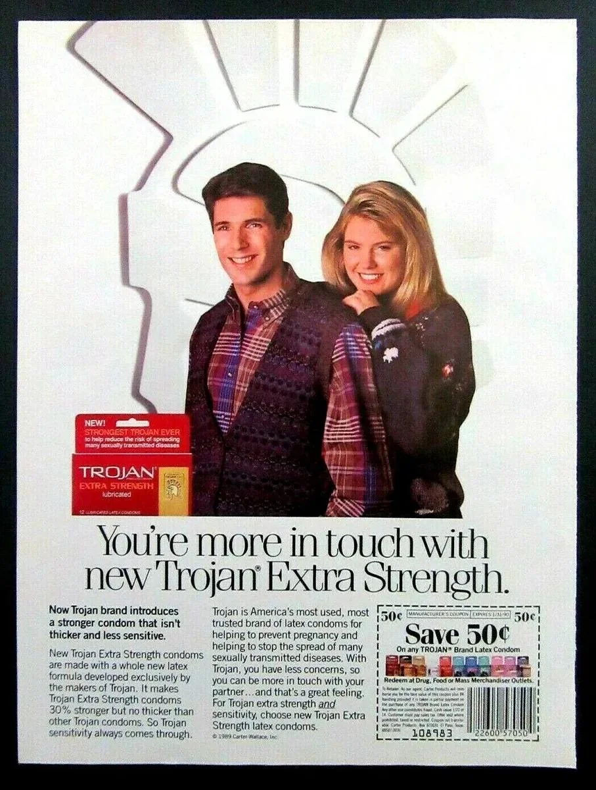
Knowing Kubrick’s Brooklyn street-kid humor in a film centered purely on an adult-themed odyssey, Bill’s failed sexual pursuits also points to wordplay for the popular 90’s condom brand, Trojan. Bill never ends up needing a single prophylactic, since when he tries to make a move (on Marion, Domino, Sally, etc.) he is continually blocked by forces beyond his control. Bill is a failed Trojan on a few levels, he wraps himself in a costume, rides horsepower out to the enemy gates, but instead of being allowed to release himself, he’s exposed, threatened, and sent home feeling blue.
By the late 90’s, computer culture was firmly established and the most worrisome issue for user’s security was computer viruses. By the late 90s, the term “Trojan” had also entered computer culture — software that disguises itself as harmless before infiltrating a system. Like the condoms, and like the original wooden horse, the virus wraps the danger in a protective, deceptive mask only to unleash a world of trouble once safely inside its target.
Bill’s arrogance and inability to detect real danger is his central weakness throughout the film. He is so certain of Alice that he gets blindsided by her fantasy, he is so confident in his status that he drives back to Somerton after he’s been warned that there would be “very dire consequences” for him and his family. Even a second, written warning doesn’t stop him, and he continues to invite this danger into his home. He allows trouble past him every time, assuming that he’s in control when the truth is he is far out of his depths.
The irony here is both tragic and comic, Bill is not the strategist he thinks he is. Instead the Trojan Horse is inverted, and Bill is the one being observed, and his own world is about to become the city of Troy. He thinks he’s the infiltrator, but his house, his office and family are being invaded while he himself is outmaneuvered and psychologically manipulated.
There’s one last ancient echo layered over the knight’s shape that connects us to the world of mythology. The chess knight bears a striking resemblance to Anubis, the Egyptian guardian of thresholds. Anubis is not a god of violence, or sex, but of passage; overseeing the movement between worlds, weighing souls, and escorting the dead across boundaries that ordinary men are not allowed to cross.
Like the knight, Anubis is a hybrid force combining human purpose and animal power, operating at strategic angles instead of directly. If pharaohs, kings, and queens represent order, law, and lineage, then Anubis represents the otherworldly energy that quietly moves between those structures, carrying vital subjects from one place into another. Through this symbolic interpretation, the knight is not just a weapon or a trick piece, but an agent of carriage, transition, appearing exactly when a boundary is about to be crossed, or when something irreversible is about to be set in motion.
•••
The film is based on Arthur Schnitzler’s 1926 novella, Traumnovelle, but Kubrick made many creative changes to the source material, as he did with many of his adaptations. While we can’t cover all of the changes, the three Harford family members’ names are worth acknowledging through these frameworks.
The protagonist, Fridolin, becomes Doctor Bill, a name that works as wordplay, implying a cost or a debt hanging over his practice. His name turns the man into an object of financial measurement, he’s the one providing the billable service at Ziegler’s party, and the one settling bills when his mask goes missing. Kubrick includes a subtle joke about this when we are first introduced to Ziegler, who thanks Bill for making a good medical referral. Bill then praises his osteopath as “the top man in New York,” and Ziegler replies, “I could’ve told you that looking at his bill.”
Fridolin’s wife, Albertine, in the novella, is renamed Alice. With this move, Kubrick gestures at the fantasy logic of Alice in Wonderland, while updating her story in a modern Manhattan marriage. The looking-glass reference extends past metaphor; Alice wears her glasses in the daylight world when she is playing the role of mother, but removes them when she slips into the darkness, altered states, and dream worlds. We see Alice depicted in mirrors several times in the film, which in myth is the only safe way to confront Medusa.
There is a crucial transition when Alice studies herself in the bathroom mirror through her glasses and reaches for the Band-Aid kit, containing her marijuana and King-sized papers. After a quick insert of her twisting up a joint, the very next shot finds her in bed, inhaling it with her glasses off. Only once her glasses are off does she mock Bill’s masculinity and certainty, which sets Bill off on the collision course he’ll spend the rest of the film bouncing off of.
Finally, we have Helena, who was unnamed (“young daughter”) in the Schnitzler novella. Kubrick chose not only to name her, but to give her a name that carried symbolic weight. In the world of mythology, Helen is the pretext for the Trojan War, the figure whose abduction collapses an entire civilization. Giving Bill and Alice a daughter named Helena does more than round out the cast, it activates a whole new dynamic, turning their child into the mythic target over which wars are fought. While Bill imagines he’s the Trojan man sneaking into a world of sin, the truth is that Helena, like Helen of Troy, has been left vulnerable, the gates left open, their home left undefended.
While researching this essay, I also discovered that Kubrick’s wife Christiane, whose paintings feature prominently in the Harford apartment, had a real life grandmother named Helen de Freitas. Helen was an American who, like Kubrick, moved to England after she finished her schooling and was known to her family as Helene. This Helen/Helene dichotomy appears to mirror the Harfords’ daughter and Ziegler’s wife, Ilona, which is the Hungarian form of the Greek name Helenē and commonly interpreted to mean “torch,” “light,” or “shining one.” Interestingly, the real Helen/Helene married Sir Geoffrey Stanley de Freitas, a British politician and diplomat—British high class nobility—suggesting another layer of connective symbolic tissue.
Horse and knight symbolism is threaded throughout Kubrick’s catalog, but it is practiced in an incredibly subtle way in his final film. When we start tracking actual horse sightings in Eyes, the meaning of their appearance will seem, at first glance, to be silly and ridiculous. An innocent child’s toy, a random statue, an unutilized storyboard, or an inconsequential deleted scene. These all may seem harmless without proper context, however, once you adopt the mythological and chess frameworks, you will see that we are looking at knights putting Bill in check, and Trojan horses bringing hidden meanings into otherwise innocent contexts. We are witnessing subtle infiltration through indirect angles of attack, hidden in plain sight, watching pieces move on a board that Bill does not know he is standing on.
Part II: Establishing A Pattern, Lolita & 2001
Across Kubrick’s thirteen films, the horse continues to appear as a force that breaks the surface of civilization. The symbol is dynamic, and operates differently within different frameworks, the same way that a knight in a chess game performs different functions depending on the particular strategy (or particular genre of film, in this case). No matter what the horse is doing, it is always tied to a shift of power that moves toward and negatively affects the weakest, most vulnerable characters in his films, which are more often than not children. In this section, we will explore the two most notable and central appearances of this symbolic pattern, but future work will fully catalog each equestrian appearance.
The true key to understanding this theory is buried in one quiet scene in Lolita. In the scene, Humbert (child predator) and Charlotte (mother to the child Humbert is pursuing) are playing chess against one another that mirrors the plot mechanics of the scene.
Charlotte picks up a knight asking Humbert how it moves, and he clarifies that the knight can “leap over the other players.” Charlotte responds that it “goes around corners,” just as Lolita walks into the frame, drifting into the background behind Humbert. Charlotte then says, worriedly, “you’re going to take my queen,” to which Humbert retorts “that is my intention, certainly” as Lolita leans on his chair and makes contact with him.
Charlotte dismisses Lolita to bed, and instead of utilizing her knight, moves her queen into a precarious position. Humbert smugly says “well, that wasn’t very clever of you” and picks up his knight, taking her queen as predicted, and visibly enjoying Lolita’s goodnight kiss a little too much.
On the surface of the scene, it is a simple flirtatious exchange. A middle-aged couple sit playing a harmless board game, Humbert clearly more experienced and in control. Underneath that surface, however, is a symbolic choreography that gives us direct insight into the mechanics of Kubrick’s chess-influenced intelligence.
The clever Knight is Humbert, the hesitant Queen is Charlotte. Lolita is not a piece at all, but rather the square being contested, the position the knight is angling toward while everyone pretends this is just play. The knight doesn’t want to be the queen, he wants to move through her so that the square belongs to him; finally unguarded so that he can advance his intentions without further contention.
Similar to the Knights restrictive but unique moves, Humbert cannot go directly at Lolita without being destroyed. Instead, he must be indirect, and go “around corners” through double entendre, forced manners, and the fake performance of being a respectable suitor to Lolita’s mother.
Kubrick has Charlotte holding the knight piece in hand as she talks about her queen being taken, while her child stands there unknowingly imperiled. It is the same arrangement we see later in Eyes, drawn in a different setting and era: the knight as the assailant, the queen as the obstacle and protector, the child as the vulnerable object.
Once you see that, the horse statue staring at Helena’s photo in Bill’s office stops being a cute bit of set dressing. It is a callback, an echo of a world Kubrick carefully explored decades prior. A warning that we are watching a new version of the same pattern play out, this time in Manhattan, this time with a doctor who assumes he’s safe because he isn’t that kind of man, and never notices the board already forming around him.
•••
In 2OO1: A Space Odyssey (1968), Kubrick gives us another loaded knight reference that perhaps is the single best example of this symbol in his whole body of work, and it happens in such a subtle and forgettable way that most people never clock it.
During their space flight, we observe a chess game between HAL 9000 and astronaut Frank Poole. Poole makes a move out loud, and HAL responds by calmly announcing a sequence that results in checkmate—and note that the piece that causes the mate is the symbol on which this essay pivots:
“I'm sorry, Frank, I think you missed it. Queen to bishop three, bishop takes queen, knight takes bishop. Mate.”
However, many chess analysts have noted that this is not a deterministic sequence. Instead, there are two other moves available to Poole that would delay the checkmate, or possibly—if the computer made a mistake—lead to his turning the tables on his opponent.
Despite these possibilities, Poole pauses, scans the board, and resigns on HAL’s authority, accepting the machine’s inevitability instead of insisting on proof or continuing play. The interaction here becomes less about the game mechanics and more about trust; a human deferring his own agency to the life-sustaining system that runs the ship on which he lives.
This scene has generated debate among chess players due to HAL’s abridged phrasing, with some interpreting it as shorthand and the most elegant way to explain the inevitability Poole is up against, while others see this as his first test of the human’s vulnerability and fallibility. What the scene reveals is that Poole will accept a confident verdict and opt out of resistance, given that it comes from a trusted source. Poole’s deflated resignation in the face of cold, careful logic is the result of this test.
In a film about consciousness, evolution, and control, this tiny exchange previews the larger arc in which HAL discovers that humans can be nudged into surrendering their own positions if presented with a stronger one. First across a chessboard, later across life-and-death decisions, where the system stops being a tool and becomes an opponent.
This small exchange suggests that HAL is no longer operating purely as a calculating machine, but as a strategist. An artificial, intelligent mind deciding to mask its intentions through misdirection. First as a knight’s move on a friendly game, then as the move on Poole’s life, sending him hurtling through space. In both cases, the human believes he understands the board, but is several steps behind the machine.
Thirty years later, we finally arrive back at Eyes Wide Shut, where the symbols are much more subtle, but the impact is magnified by the pattern Kubrick has laid out in his early work. Bill believes the danger is following and punishing him for wanting sex and answers, but every time the horse symbol appears, its gaze moves past him and settles on Helena. The subtle knight continually advances, not across Bill’s marital board, but across a generational one. Bill is so preoccupied with his failures and his unanswered questions that he fails to see the signs that he is in danger. He’s busy fantasizing about what will happen to him, while Kubrick is subtly revealing what will happen to his family.
Part III: Bill’s Office & The Adult’s Knight
Beyond mythological studies, Kubrick was a voracious reader and amassed massive personal libraries of psychology, philosophy, and behavioral science studies. He would order specialized texts on subjects like psychoanalysis, group psychology and sociology. In line with thinking through the lens of chess and mythology, Kubrick applied these social studies to help inform and reflect the nature of the psychological aspects of a scene’s content. We’ll use this framework to explore the interior and exterior spaces of our characters.
Most of Eyes focuses on Bill, and his struggles to understand the increasingly troublesome world he finds himself in. After Ziegler’s Christmas party (and after Bill and Alice get home and do a bad, bad thing), we are treated to a montage of Alice and Helena getting ready for their day while we get brief glimpses of Bill’s life as a doctor. During this first look into Bill’s professional life, we only get visual access to his reception area and exam room, no inner view to his own office.
It isn’t until much later that we are allowed to see Bill’s inner sanctum, and it comes after his rough night out at Somerton. He returns home, his life having just been threatened, and he is immediately humiliated by Alice’s sexual subconscious—her dream describes her having sex with so many men she loses count. Following this, Bill has what I imagine to be the worst night of sleep in his whole life.
The following morning, he attempts to find Nick Nightingale but, failing to locate him, is able to drop off his costume at Rainbow Fashions. While settling up his bill, the store owner, Milich, makes it clear to Bill that he is pimping out his young daughter, and invites Bill to take part. While shocked, Bill doesn’t do anything to stop the immoral and outrageous behavior he has just witnessed, instead simply staring back at Milich in stunned silence.
In the very next scene, we are finally able to see inside of Bill’s office. Sitting at his desk, we find a distressed Bill picturing his wife and her naval fantasy officer engaging in sexual foreplay. The objects that populate his office not only appear to be a reflection of his inner thoughts, but after this first scene they begin to shift in plain sight. Behind Bill on the credenza there are holiday cards, and a brown file accordion with a newspaper on top:
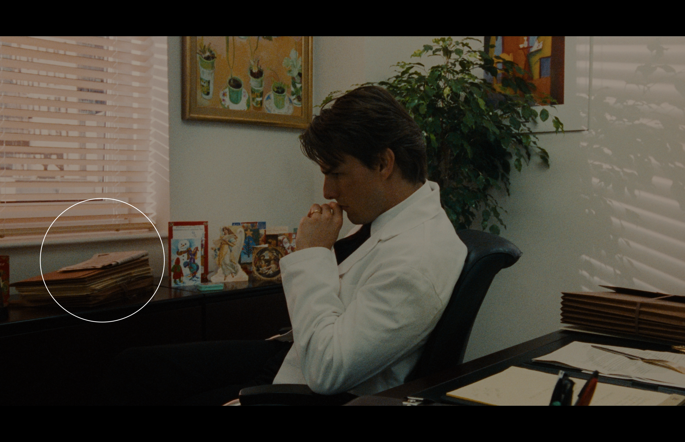
There is a knock at the door, and his assistant walks in, giving us a wider shot of the interior. From here we can see a small framed photograph of Helena, who appears to be playing piano, and an object that (after a long Google) I was able to confirm is a kinetic energy desktop toy. Described as a “cyclical perpetual motion machine,” the mechanism propels two teal dolphins in circles as it repeatedly spins, endlessly—the twin teal dolphins appear visually echoing the two teal fish-like statues we see in Ziegler’s upstairs bathroom. Note too that the window sill is empty, and unadorned:
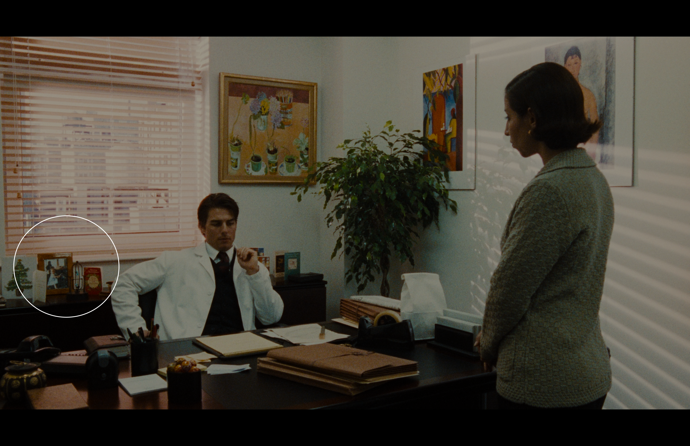
In this short scene he asks for his assistant to reschedule his appointments and to retrieve his car, and the following sequence provides Bill multiple opportunities to disengage, but doesn’t. He drives back to Somerton and is issued the second, formal written warning. Stopping home for a quick beer, Bill encounters Alice and Helena at the dining room table. Alice is teaching their daughter about addition and subtraction—the very thing Kubrick is doing with objects in the mise en scene. Bill then lies to Alice about needing to go back out for official doctor business, when really he is still horny, angry, unfulfilled, and confused.
We venture back into Bill’s office at night, Kubrick providing a long, slow, cold scan of the empty unlit reception area, then cuts into his inner office again, but there are notable changes at play, suggesting that someone (or something) has infiltrated Bill’s office and rearranged his innerworld.
On the window sill behind Bill, there’s now a dark statue of a horse. On the credenza, to its left, there is a new and bigger framed photograph of Helena with black gloves on, holding what looks like a hockey stick. Additionally, there is now a single circular black-and-gold mask that wasn’t there before, visually in the same family as the African masks on Domino’s walls. On the desk in front of Bill there are four rubber bands, two of them overlapping, like a Venn diagram making a vesica piscis:
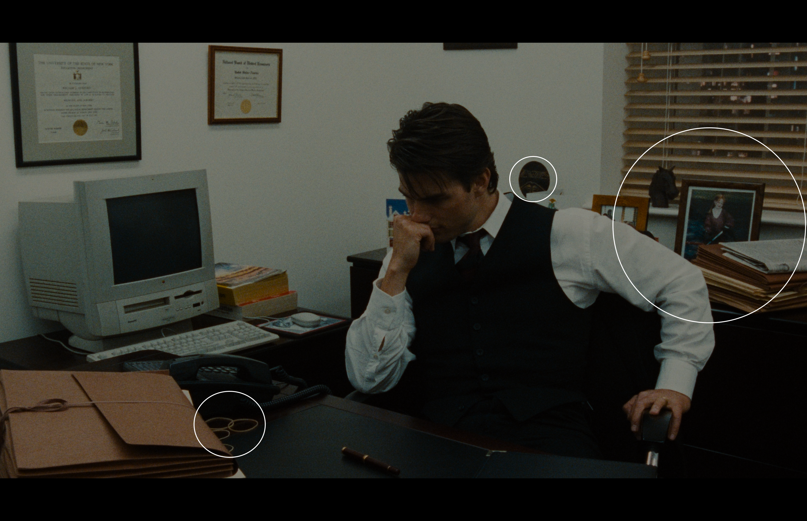
The horse statue looks like an oversized black chess piece, the adult’s knight, and it’s angled diagonally so it is staring straight at the new, bigger framed photo of Helena, as if whatever force put that object there was strategizing and setting up an attack on, or a capture of her. Directly in line with the knight and Helena is the newspaper from earlier, but now there is the distinct shape of a man is now visible in the bottom right corner:
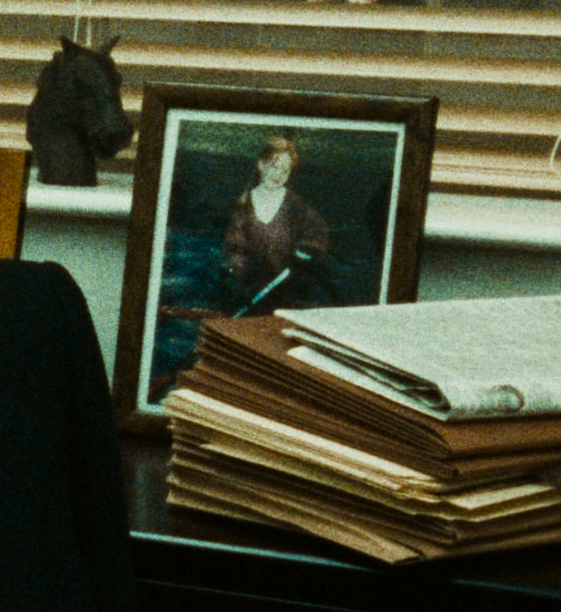
Bill has been captured by the thought of his wife and the naval officer, and sits alone picturing the encounter. This time the sexual images are more violent, more aggressive, depicting Alice moaning. Desperate to assert himself, Bill picks up the phone and dials Marion to make good on her advances from the night before. Instead, the call is intercepted by Marion’s fiance, Carl, who answers the phone and blocks Bill’s attempt.
When we cut back to Bill, he is now aligned perfectly with the black and gold mask, his body obscuring it completely. While the horse statue should be over his shoulder, it’s ears popping into frame when he shifts, it isn’t. The symbol for clever strategic advances has been subtly subtracted while Bill making a foolish move on Marion:
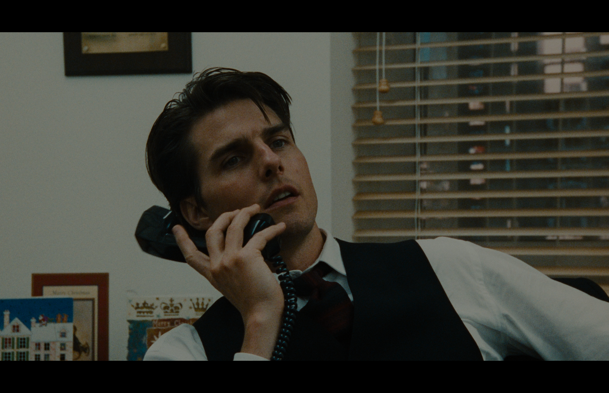
Having failed again, Bill looks deflated and embarrassed. To visually echo his shame, one of the rubber bands that was on the table is now wrapped around and binding the fingers of his left hand. The mask reappears, the horse statue still angled at Helena, who is trapped between it and the man on the newspaper:
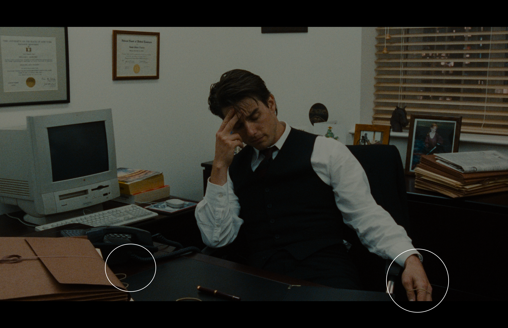
When Kubrick adds or subtracts a prop, he is inviting speculation; asking a question without providing an answer. In this way, the statue works as a Trojan Horse entering the swirling world of Bill’s psyche, his private, personal area invaded and rearranged. The arrival of this object reads as a chess move from an unseen player, a knight advancing to put the Harfords in check. The internal chaos Bill is experiencing is being visibly represented; as Alice’s fantasies play in Bill's waking world, the primal, animal rhythms and the threats on his family enter the otherwise clean, clinical space of Bill’s profession.
Bill appears oblivious to the changes and the dangers that move around him, he doesn’t even seem to be bothered that he just witnessed child prostitution in broad daylight. He is so singularly wrapped up in his fragility and failures that he doesn’t even notice that his family is now being targeted, his daughter is now in the eyeline of a strategic enemy. He doesn’t realize his space has been invaded, that his family’s future is in the balance.
Part IV: Harford’s Apartment & The Child’s Knight
When I first set out to write this, the knight we saw appear in Bill’s office was my only direct visual example from within the film. During my research, I was delighted to be shown a second horse appearance towards the end of the film. Hoping that the horse may have appeared earlier, I began to scan the mise en scene from the beginning and could not believe my eyes. Not only does the horse appear twice, its placement and movement is even more subtle and loaded than the office knight, the adult knight.
In order to see this knight, the child’s knight, we venture back to the first setting of the film, the Harford Apartment. Standing quietly on the dining room table as when Bill and Alice hand Helena off to Roz the babysitter, is the very first appearance of a horse. Unlike the dark statue in Bill’s office, this white toy horse has blonde hair and a teal saddle, appearing to belong to Helena. Where it stands is exactly where Alice will later teach her math problems about which man has more money and power, indirectly teaching her to consider which partner would be a better strategic move:
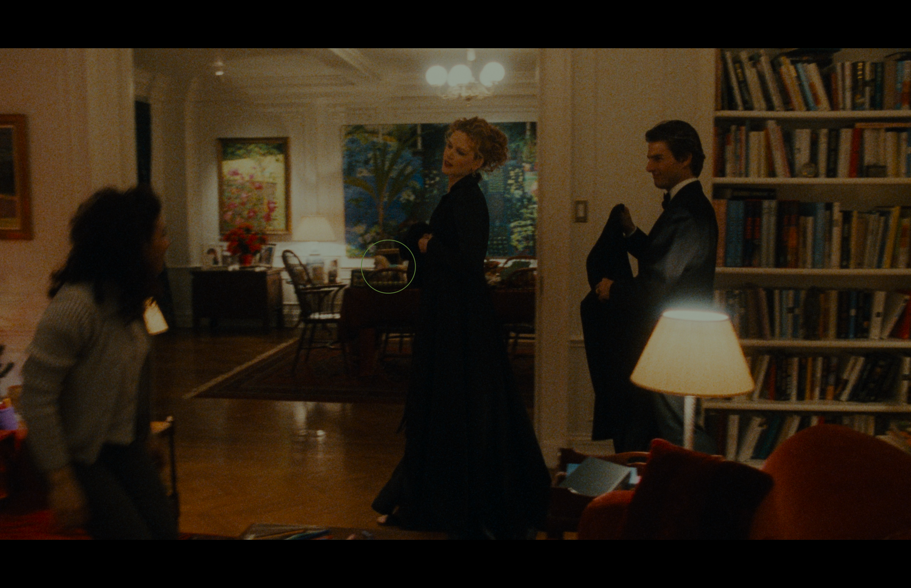
In this brief scene, there is a dark thematic rhyme with The Nutcracker, the ballet that Helena asks her parents to stay up and watch TV while they go party. The story is about a young girl drawn into a fantasy world where her toys come alive at night and move by themselves while the adults are elsewhere. The narrative structure of The Nutcracker parallels this exact moment, where Bill and Alice disappear into their adult fun, and the child’s toy becomes animated and moves to a new position.
Later, when Bill comes home from the orgy carrying the costume which, ironically, failed to disguise him, he checks on Helena in her room as she sleeps. After ensuring she is safe, he then walks down the hallway and through the living room. As the camera tracks him, we now see the white, blonde haired horse with a teal saddle sitting on the bookshelf in the living room, now facing right down the hallway and the room Bill just walked away from:
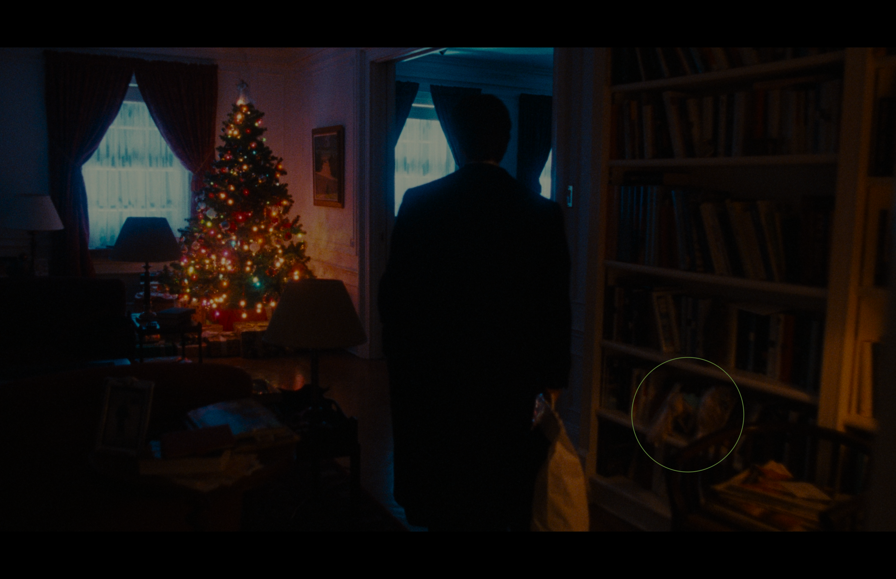
The toy horse has moved from the dining room table, where Helena and Alice will later sit and work out which man in the math equation has more money. Alice is not just teaching her daughter math, she is indirectly helping her understand the dynamics of value and power in modern society. This seemingly inconsequential decision connects directly with Bill’s struggle with his own social status, as we witness him continue to fumble around the world of the elites, a world where Bill is merely a servant.
Mapping the horse’s movement from a bird’s eye view, it doesn’t simply change spots. It is no accident that it travels in the shape of an L; a knight path through the Harford home. From its starting point on the dining table, through the open doorway, and then left onto the living room shelf, a subtle mirroring of the knight’s unique move on a board. This is the exact kind of inside, hidden mechanical joke Kubrick loved, turning a prop change into a reflection of his thematic strategy that most viewers will never consciously register. What truly matters about this development is not that the horse moves, but what it moves toward.
In each appearance, the horse’s head points in Helena’s direction. In the beginning of the film, the child’s knight on the dining table angles toward the couch where she sits. Next, in Bill’s office we see the adult’s knight on the shelf as it stares directly at her framed portrait. Finally, we see the child’s knight one last time when Bill returns home after Somerton, the horse facing down the hallway toward Helena’s bedroom where Bill just saw her sleeping. By this point, Helena is trapped between the child’s knight and the adult’s knight, a visual symbolic gesture that suggests another hidden theme.
Helena is a child in an adult’s world, an innocent observer caught in between the mature themes her parents are exploring. In this way, trapped between the child and the adult, the symbols combine to suggest that the underlying animal drive we’ve been tracking is indicative of the changes children go through at puberty, and that Helena is being expected to grow up—perhaps sooner than her parents want her to. This theme of animating animals, like in The Nutcracker, points to the magic, invisible interchanges we experience—the human body and the animal instinct fusing you into the infamous teenage years.
The knights aren’t following Bill, they are locked on Helena. Bill imagines he’s the one making moves, crossing thresholds, when the horse’s line of sight tells a completely different story. Bill’s time is over but he continues to chase the shadow of his youth, his bruised ego and desires in the night while a serious game has already focused in on his daughter’s future.
After Bill walks past the white knight, he enters his home office to hide his disguise, to mask his mask, he crouches down in front of his credenza and removes an accordion file folder to make room for the Rainbow Fashions bag. This interaction with what is in vs. what is on his credenza connects us back to Part II, his other office scene at work. By placing the brown accordion file on top of the credenza, he connects these spaces, mirroring the accordion file we observe sitting in front of the newly added portrait of Helena in his work office, the one with the newspaper and the unnamed man.
We’ll find out later that his mask is subtracted in the process of adding it to his office, and it will not be in the bag when he returns to Rainbow Fashions the next morning. The knight is advancing on his child while his wife lies in bed laughing, dreaming of sexual encounters with so many men she loses count.
Part V: Missing Puzzle Pieces: Helena’s Cut Scene & Alice’s Dream Storyboard
This is where we enter uncharted and unexplored territory, and visit cut material that should not should not be outright dismissed for its lack of inclusion in the finished film. The editor of Eyes Wide Shut, Nigel Galt, confirmed in a November 2025 interview that “There was nothing missing [from the cut that was publicly released] . That cut is Stanley’s cut the day he died. And nothing was over-edited.”
This confirms that nothing nefarious took place during the final stages of editing, and finally puts to rest the rampant conspiracy theory that 23 minutes were cut from the film after his death, which has loomed over the film since its release. However, this does not mean that Kubrick hadn’t theorized, developed, and even shot more material that would have made these symbolic and thematic connections easier to make.
Tucked into the Stanley Kubrick Archives are three behind-the-scenes images that display what the film itself can’t say out loud. Two of them show Nicole Kidman seated beside Kubrick with the young actress who played Helena on her lap, all three gathered in front of what appears to be a monitor reviewing footage they had just shot. In one image, Kubrick is holding both Nicole’s hand and Helena’s hand, smiling as they look toward the screen. In both of these images, Helena is wearing an equestrian riding helmet — not a bike helmet, not a skate helmet, but a formal riding cap.
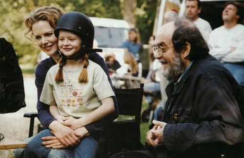
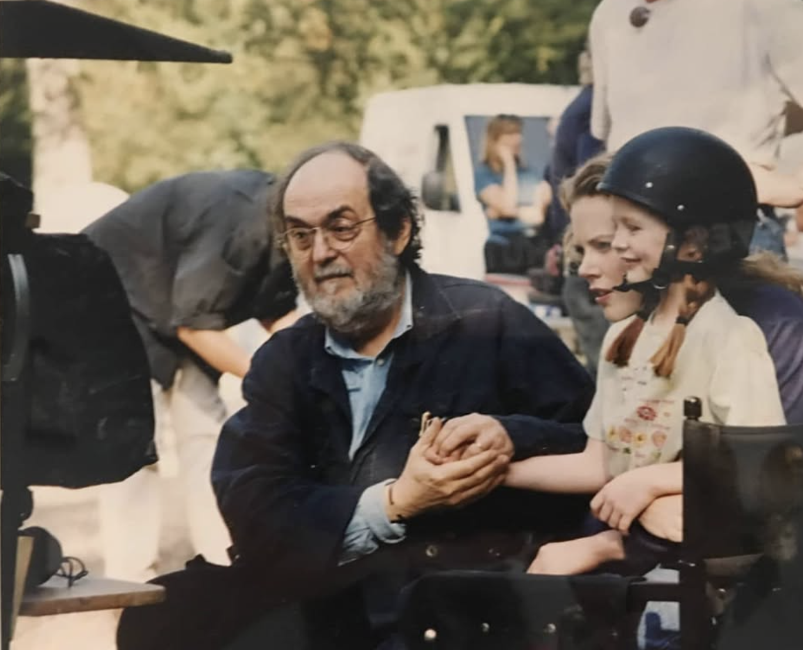
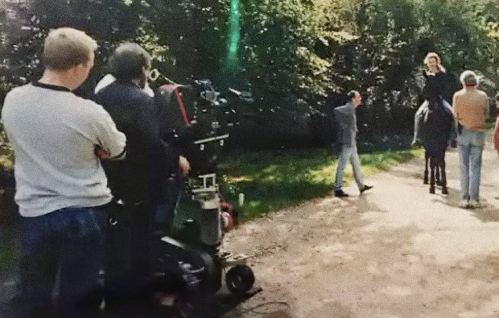
The third image shifts perspective entirely. It shows Kubrick positioned behind the camera outdoors, and Nicole mounted on a black horse during what is clearly an active riding setup. This is not a rehearsal, nor a symbolic inference. Nicole is mounted and riding in front of a camera.
Taken together, these images confirm that an equestrian sequence was staged and filmed at an outdoor location. At minimum, Nicole rode, and with Helena dressed in a riding helmet and present during the setup and review of footage, the implication that she was riding, or was intended to ride, becomes difficult to dismiss.
And yet there is no scene of Helena wearing a riding helmet in the finished film. There is no outdoor riding sequence wherein Nicole is on a black horse. We never see Helena outside at all. She exists only inside the apartment and inside the toy store. That’s it. This outdoor riding material was shot, costumed, monitored, and then ultimately removed from the final form of the film.
A scene was planned and shot that would have made these observations and connections of this essay more literal. Its removal leaves the symbolic structure intact, and obscures a connection that would be impossible to ignore. These photographs materially reinforce the symbolic reading that the horse marks transformation into womanhood, the horse itself serving as Anubis, carrying Helena’s childhood into the realm of adulthood. We can’t know for certain how Kubrick meant to use this scene, or the exact content of it, only that he went out of his way and spent material resources to capture footage that required Nicole on horseback and Helena in a riding helmet.
What we do know for certain is that Kubrick didn’t improvise costly outdoor shoots with child actors who, due to protective child labor laws, were very limited by strict rules regarding how long they are allowed to be on set on any given day. Knowing Kubrick’s strategic resourcefulness, dressing Helena in a riding helmet was a deliberate production decision. If a horse in Kubrick’s visual language represents a knight, sexual animal instinct, and strategic advances, then this is not an inconsequential wardrobe choice, but a troubling suggestive association about Helena’s role in the unspoken, unseen shadow of this film.
These production stills are not random lost moments, but instead serve as suggestive, vital connective tissue that Kubrick put on film, then removed from the official text. A message that survives only in photographs, like a redacted sentence in a declassified FOIA released document, where the meaning becomes louder in absentia. The horse and Helena connection is not implied, it was staged, shot, then obscured before it reached the audience.
This is the missing puzzle piece hiding just outside the film, the uncomfortable reality that the narrative isn’t allowed to name, that a child is growing up, being developed and pushed into an adult world, a dangerous world where the vulnerable are most at risk. The horse symbol doesn’t gently enter Bill’s mind, but rather it indirectly slides past his awareness, infiltrating his family’s space and Helena’s future.
•••
The most overt, direct and visually insane piece of this theory comes from an image Kubrick never even put on film, but specifically commissioned from graphic artist Fangorn (Chris Baker). Kubrick had initially planned on filming Alice’s sexual dream sequence, which is instead verbalized to Bill when he arrives home from Somerton in the finished film. However, in her verbal summary, we miss out on key visual movements that Kubrick had theorized and planned which—like the cut riding sequence—would have made these connections easier for the viewer.
All of the storyboards are worth reviewing, but one in particular has always stood out as particularly powerful: an erotic illustration of a naked man having sex with a woman on horseback, which, given this is Alice’s dream, it would not be a stretch to assume she is the woman and the Naval Officer is the man. It’s a rendering of two people engaged in the primal, carnal energy we’ve witnessed in Bill’s flashbacks, but even more graphic, with Alice being taken from behind on a horse. Two people having “doggy style” sex on an actual animal, drawn to better illustrate the point we’ve been circling:
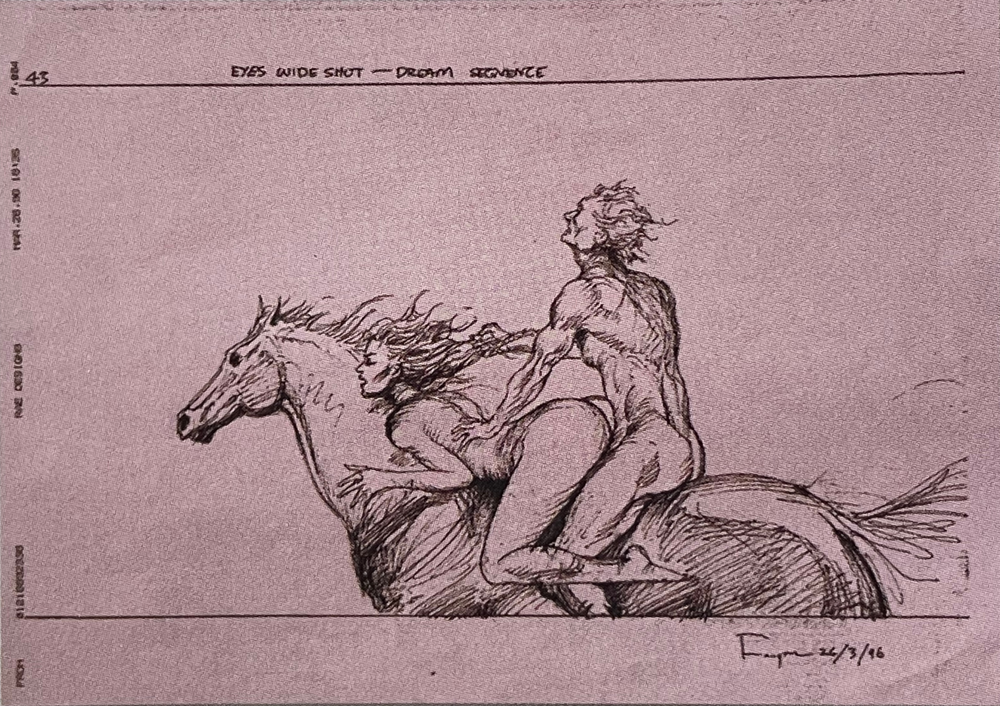
In this image, the man sits upright pulling Alice’s hair back with one hand, pressing her down against the horse with the other, as if she were the animal he was controlling. Alice’s head aligns directly with the horses, their eyes matching the same plain, and her hair echoing the shape of the horse’s head. The mirroring here is over the top, beating you over the head with the horse as Eros, going over the lightly traced, suggestive symbology from the finished film with thick, permanent ink.
Juxtaposed with the suggestion of Helena’s deleted riding setup, the implication of this symbolic combination is visceral and uncomfortable. The horse serves here as both vehicle and vessel, confirming not only the linking of the Naval Officer to the horse symbol, but also the sexual, animal urge that Bill’s blue-tinted fantasy flashbacks suggest.
The storyboard depiction is the clearest, most potent imagery of this theory that exists to my knowledge. In this audacious rendering, we see the adult implications of what an innocent horse toy, statue, or riding scene suggests; an unmasking of the symbolic depth and weight of the horses we have observed. If this is the grown-up version of what horse-riding means, Helena being costumed in a riding cap all of a sudden becomes a deeply unsettling subject. While Alice lies in bed dreaming of the primal world, Helena is being led to inherit it. Where the dream sequence demonstrates sexual power in its rawest, most obvious form, the riding cap hides in the shadows as the subtlest, most forgettable production detail.
Kubrick cuts both moments from the film because he had refined his technique well enough to leave this troubling discovery to sit under the liminal perception of his audience, but he leaves the horse and knight shadows and associations everywhere. Kubrick had his assistant, Leon Vitali burn all unused footage, and with both of them passed on, we can only do our best to interpret the visions, patterns, and ideas that were left for us to put together. Despite their absence from the film, these peripheral symbolic decisions are powerfully connected to the techniques, strategies, and patterns we’ve observed.
Part VI: A Hint of Lace, or The Chromatic Progression of Helena
I have long speculated that Eyes is as much a complex puzzle game as it is a film. In a future essay or video, I look forward to cataloging each of the many mini-games that appear throughout, but I want to focus on one particular game that always felt to me like Kubrick winking at the audience. That is the storefront of "A Hint of Lace," which is seen several times as Bill meanders the streets of Kubrick's NYC. The word "hint" always suggested to me there was some deeper mystery of foot that he was trying to clue us into, but it evaded me until I made the following connections. To understand this hidden mechanic, we must analyze the wardrobe choices of the most vulnerable character of the story, and the centerpiece of this essay, Helena.
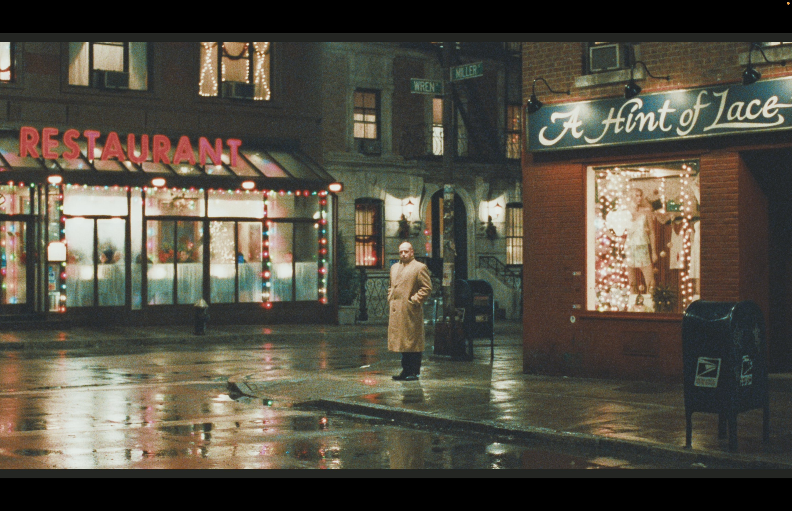
At first blush, the name of this store and the might seem unrelated to the horse/knight symbols, but the wardrobe choices that were made for the Helena character parallel the transformation we’ve outlined in the prior arguments. And if we are going to talk about Helena’s wardrobe at all, then we have to talk about all of it, because in Eyes nothing exists in isolation.
Every detail in this film bleeds into three others, every texture echoes somewhere else, and the moment one attempts to isolate a single motif, it immediately branches outward like a thematic lightning bolt. To make any confident statement about Kubrick’s methods requires mountains of cumulative evidence, evidence that could easily fill multiple essays, but if the horse functions as a structural key, then Helena’s wardrobe operates as a quieter atmospheric one, and it deserves to be traced in sequence rather than selectively cited.
Here is the basic trajectory, followed by a breakdown of the few scenes she is featured in:
Pink → Rose → Red → Red/White in Yellow light → Red/White in Blue light → Teal → Dark Blue
Helena first appears in the living room of the Harford home wearing a pink blouse trimmed delicately with lace at the neckline, layered beneath a pair of fairy wings that signal childhood fantasy while simultaneously grounding that fantasy in fabric and texture. The pink is soft, almost pastel, and the lace is not theatrical but domestic, stitched into an everyday garment rather than a costume piece. It’s worth noting that Helena wants to stay up later than her bedtime, a subtle nod to her wanting to break the bonds of her childhood restrictions.
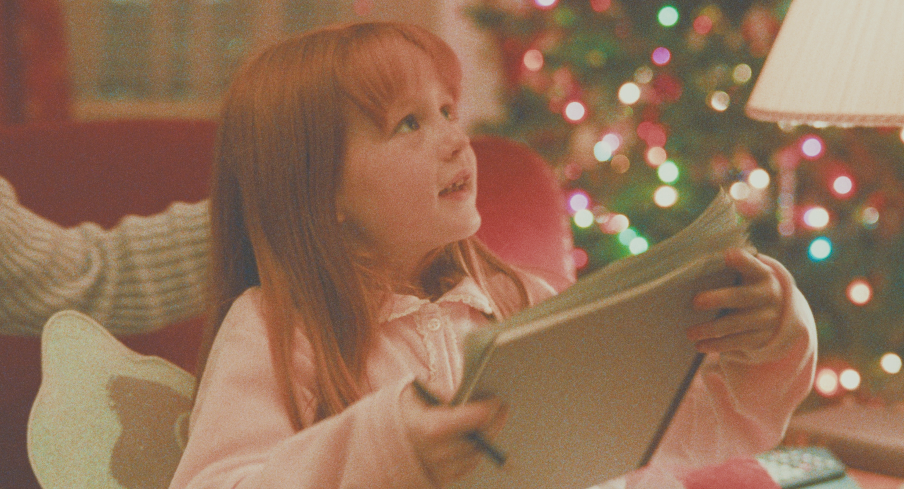
The next morning after the Ziegler party, Helena is depicted at the kitchen table wrapped in a white bathrobe patterned with pink roses, a floral motif that extends the softness of the opening palette and keeps her visually coded within warmth, ornament, and innocence.
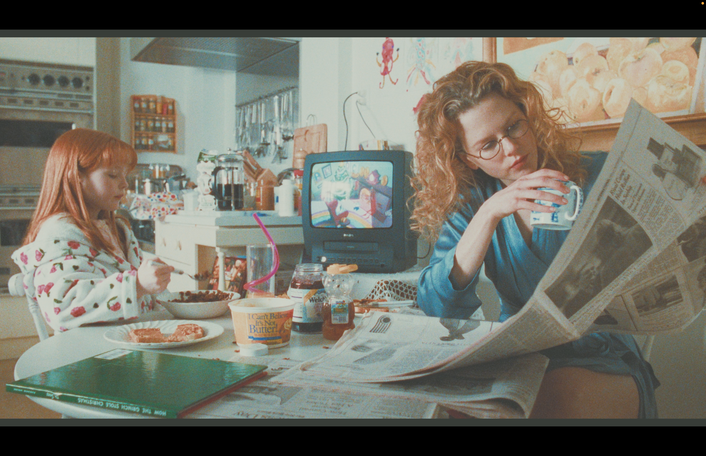
Immediately following this image—and I mean the very next frame—Kubrick cuts to Bill’s examining room, where a nearly nude female patient is framed in white lace-trimmed panties with pink roses and a medical robe. The film does not comment on this adjacency, but the immediate visual rhyme exists nonetheless: lace, flowers, robe, exposure, domestic softness set against adult vulnerability.
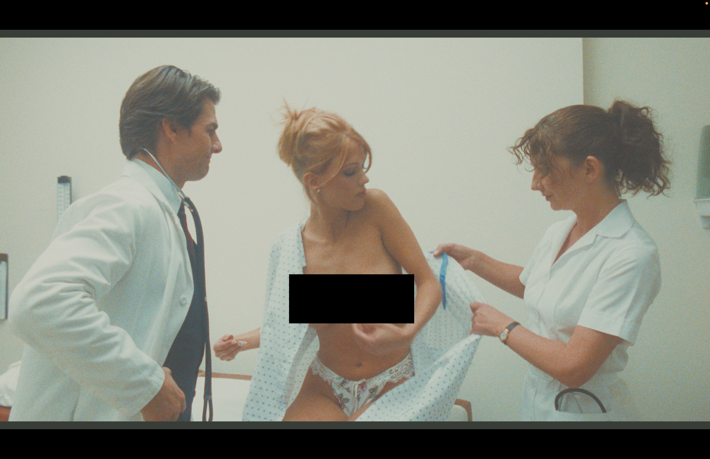
As this montage sequence continues, Helena’s color palette intensifies. She now wears a red turtleneck beneath a red vest embroidered with flowers, and this look is not fleeting; it appears repeatedly while her hair is being combed, while she brushes her teeth, and while she wraps a red sweater with teal patterning as a gift for her father.
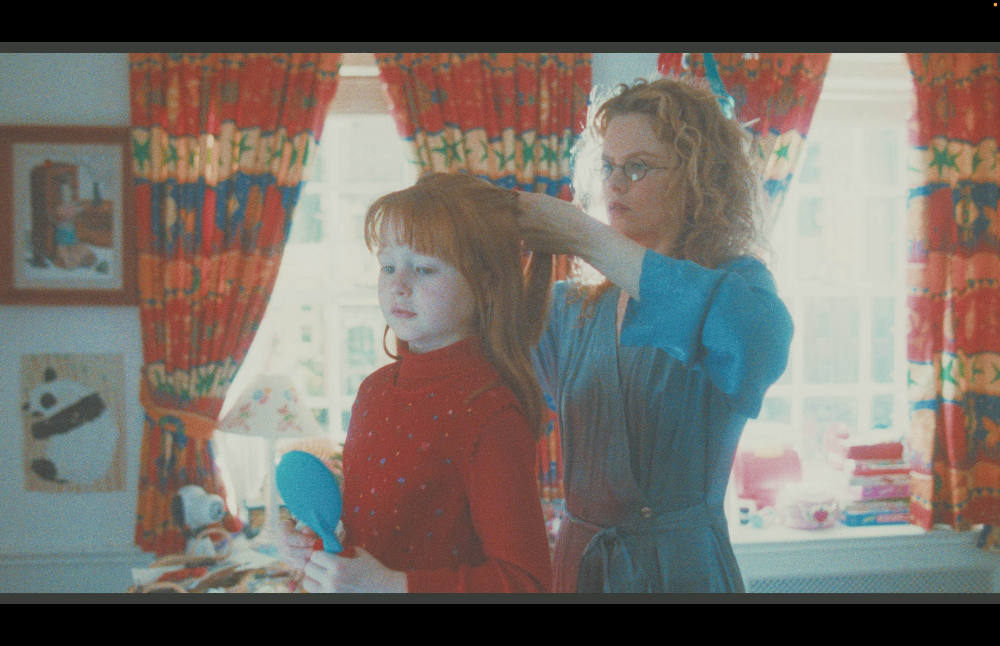
The repetition matters, as does the saturation. The pink of the opening has deepened into red, and the floral detail has evolved from bathrobe to vest, from softness to something more bold in tone.
Later, when we see her in bed, she wears white pajamas patterned with small red alternating designs—airplanes interspersed with a rounded, semi-circular motif—while a lace-tied bow rests at her neck, tied and knotted. This is the second appearance of "lace" on Helena, which also works as a symbolic bind, as if she is locked into this progression. Red and white remain, but the lace has shifted from ornament to fastening. Note that Helena is awake, and that the room is lit warmly, with a yellow "daylight" tint lightbulb, this will come into play in our next observation.
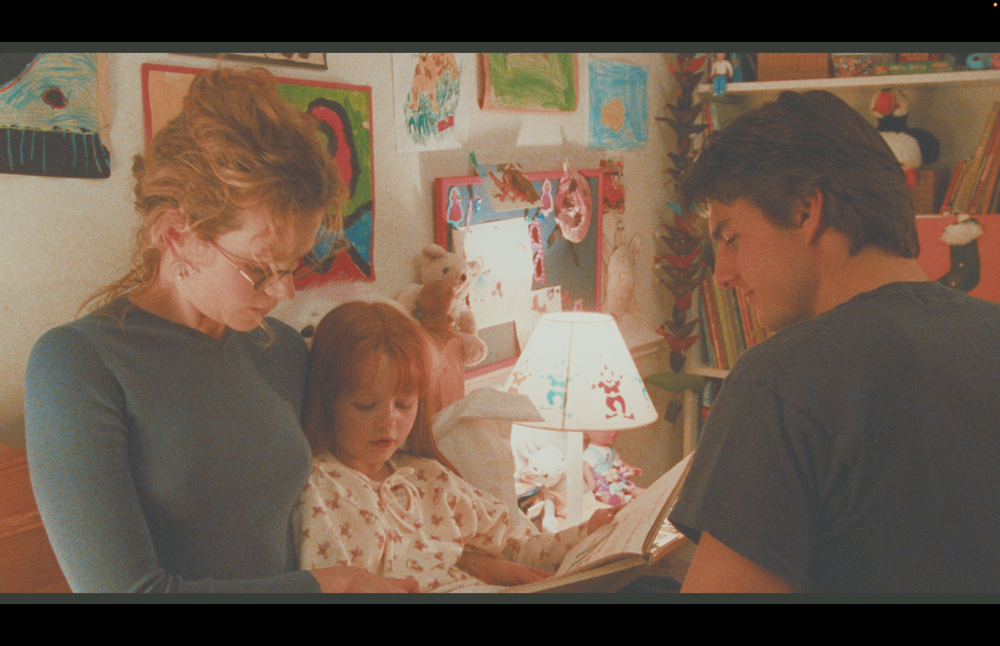
For nearly an hour and a half of screen time, which translates to days within the internal chronology of the film, Helena is absent while Bill’s nocturnal odyssey consumes the frame. The ritual, humiliation, confession, and threats of the adult world expand as the child is visually removed from it.
When Bill returns after Somerton, he re-enters Helena’s room to check on her. While she is still wearing her white and red pajamas, she is now asleep, facing the window where a bright moonlight has now washed her in an unmistakable blue hue. In a movie about dreams, her move from waking to sleeping mirrored in the lighting design suggests a meaningful change has occurred. In other words, Bill’s lustful visit to Somerton works as a central switch in the mechanics of her development, his witnessing this dark ritual has now had a visual impact on how we see Helena for the rest of the film.
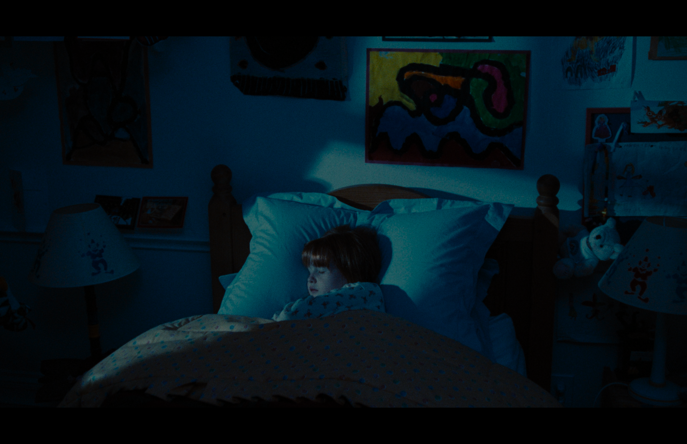
Bill once again ventures out into the city again, and when he returns home, Helena is now dressed in teal, a blue-leaning V-neck that shares no chromatic continuity with the pinks and reds of the opening domestic world. The warmth has drained from the frame; the softness has been replaced by cooler tones.
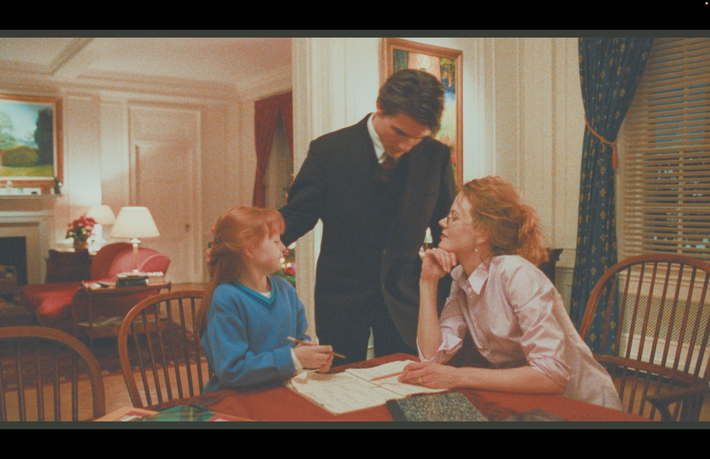
In the final toy store sequence, this shift deepens further, as Helena appears in dark navy, topped with a dark blue velvet hat and what seems to be a dark dress detailed with small floral accents. Tracked cleanly, without embellishment, her progression moves from pink to rose to red, from red and white to teal, and finally into deep blue. Kubrick is not careless with color, and this movement does not read as random wardrobe drift. The film never announces the transformation, but it stages it.
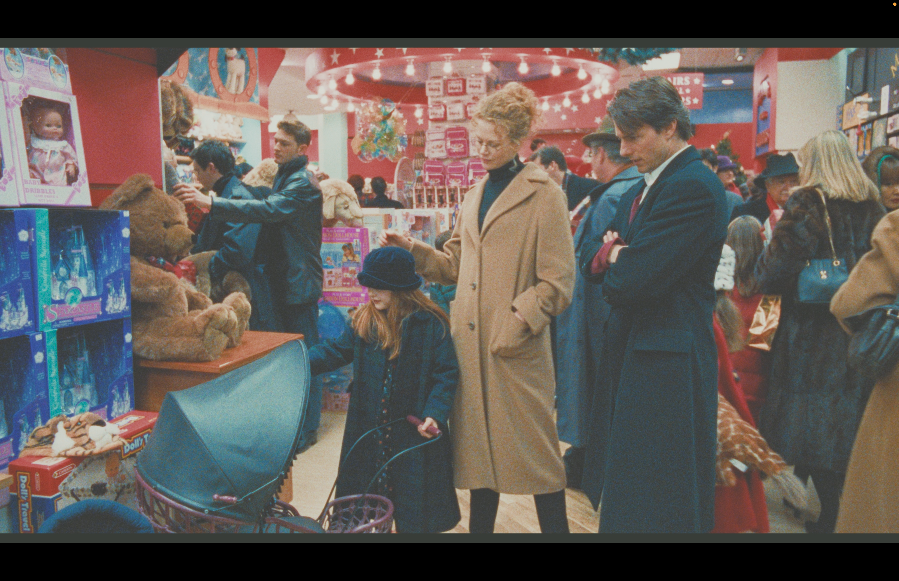
•••
A secondary anomaly appears only after Somerton in the form of a blue glass bottle. In the dining room scene, the bottle is absent when Bill enters and kisses Helena on the head; it appears only when he turns back, positioned conspicuously on the sideboard behind her.
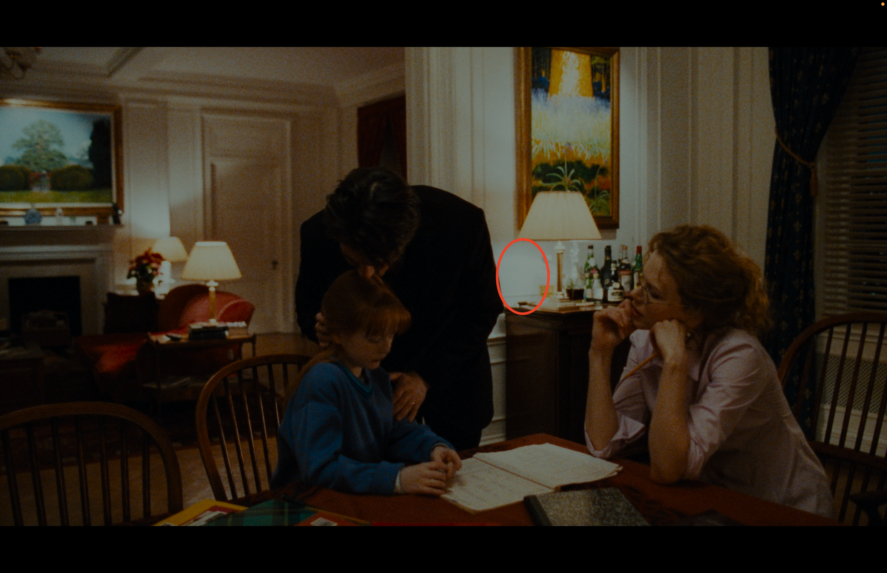
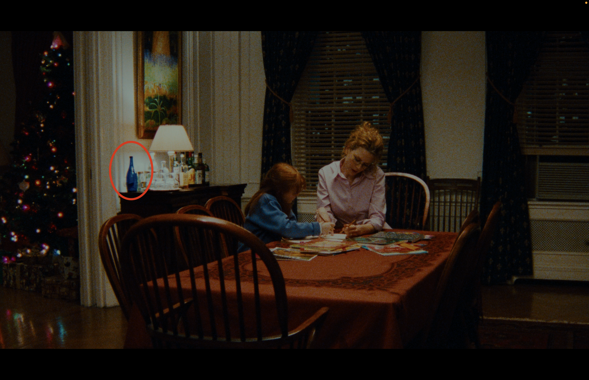
The object surfaces once more in Bill and Alice’s bedroom that same night, placed on Alice’s nightstand. When Alice sits up, her body obscures it, and in the subsequent shot the bottle has become a box.
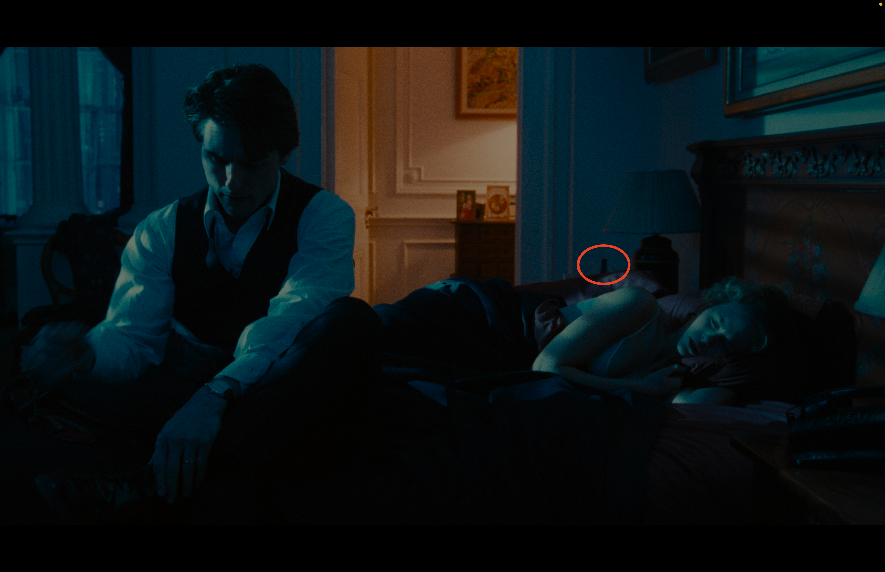
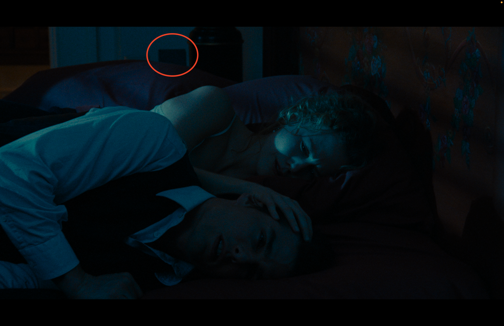
The object is blue, and it appears only after Somerton, sharing tonal alignment with Helena’s abrupt shift into the blue spectrum. Whether it signifies medicine, containment, intoxication, or something less literal remains unresolved, but its introduction coincides precisely with the chromatic pivot in Helena’s costuming. Kubrick does not casually insert glass objects into a composition that has otherwise been so tightly controlled.
•••
Complicating this trajectory is Helena’s wardrobe from the deleted equestrian stills, in which Helena appears in a cream or clay-toned shirt—an earth tone never worn in the finished film. This costume does not correspond to the pink, red, white, or blue progression observed on screen, suggesting that the riding material existed outside the carefully managed domestic wardrobe arc. If staged within the narrative, it would have intersected her trajectory at a point not represented in the final cut.
Once Helena’s wardrobe is tracked chronologically, peripheral echoes surface more clearly. Sally, in Domino’s apartment, wears a long floral skirt and a denim shirt, which is not only knotted like Helena's lace, but embroidered with flowers across the back and collar, cut in a distinctly western style. Her red hair, like Alice and Helena's, is pulled into a tight ponytail high on her head. She exists between Helena’s innocence and Alice’s adult autonomy, neither child nor fully empowered, positioned within transition rather than stability.
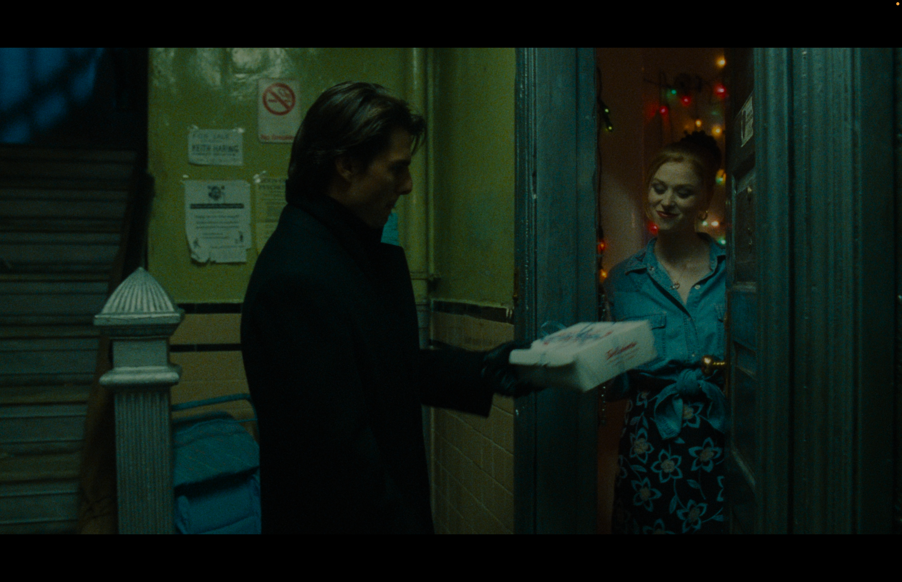
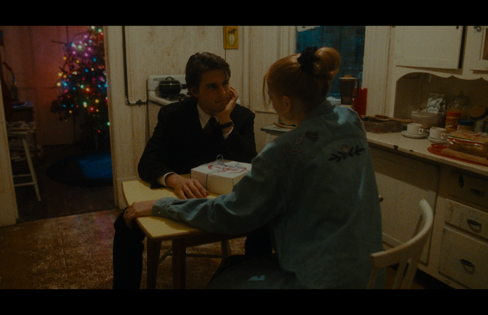
In Bill’s office, the nearly nude patient framed in lace-trimmed underwear visually rhymes with Helena’s lace-trimmed pink blouse from her first appearance, and the bow tied on her pajamas. The storefront sign reading “A Hint of Lace” reinforces the motif textually as Bill wanders the city. A hint of lace recurs, as do the pink roses, suggesting soft ornamentation edges against harder earthly realities.
None of these details alone declare meaning, but they create adjacency patterns. Helena’s progression from pink to red to blue unfolds within a film saturated with lace, floral textures, thresholds, and concealed movement. If the horse functions as a marker of passage and indirect advance, then Helena’s wardrobe progression reads as a chromatic counterpart to that same movement—a quiet transition staged without dialogue and absorbed into the visual field rather than announced outright. The film does not substitute characters for one another; it operates through echoes, allowing color and texture to migrate across spaces and bodies, building subconscious continuity. In a narrative concerned with hidden systems and belated recognition, it would be careless to assume that such a controlled evolution in palette is incidental. Kubrick does not need to declare transformation; he can stage it in fabric and let it register beneath the level of speech.
Part VII: The Conjurer & Kubrick’s Final Mate
The game Kubrick made for us provides keys, not answers. The horse functions as both knight and night incarnate, the pulse underneath polite society, the sexual, primal animal instinct that refuses to stay hidden, the part of human desire that pushes past manners and laws and into adulthood whether anyone is ready for it or not. The horse represents the spirit of Eros, but disguised, indirect, moving in unexpected ways while our focus is consumed elsewhere.
Every single time Kubrick brings a horse into frame, a silent visual alarm is sent to the viewer's subconscious; a generational inheritance, a violent, cyclical spiral forward through time, a strategic repositioning that does not announce itself. A horse in Kubrick’s work is never simply ornamental, but instead serves as a disguised force that bypasses the illusions of security and arrives from an angle. It does not knock at the door, it is already inside.
Eyes makes this symbolic intrusion literal by allowing the ritual world and the domestic world to connect through these portals. By the end of the film, the pillars of these worlds touch and the walls disintegrate. What Bill once believed to be contained within fantasy or jealousy is now present within his own home. The horse does not enter Helena’s life from somewhere outside; it has been placed in her proximity from the beginning, on tables, in toys, in offices—even in deleted sequences—waiting for the adults to miscalculate.
This is why the Trojan Horse symbology works so effectively. Alice’s fantasies, Bill’s humiliation, the masked ritual, the office statue, the riding helmet, and the toy store are not isolated curiosities but instead serve as gates through which the same dark force advances. The film begins with Bill confident in his status and ends with him having glimpsed how power actually operates, how hierarchies conceal themselves, how desire moves beneath civility. In that sense, the film is about Bill growing up far too late, learning the rules of a game he thought he had already mastered, and unwittingly affecting those closest to him.
But while Bill stumbles through his belated initiation, the pieces on the board do not remain still. The knight does not wait for him to understand it, it moves in the shadows while he is consumed with his own petty jealousy. The color shifts in Helena’s wardrobe, the floral and lace echoes, the equestrian staging, the subtle reconfiguration of objects — these are not loud declarations, but they form a pattern that suggests a hidden transition. If the horse in Kubrick’s symbolic language marks threshold and passage, then Helena stands at thee threshold of adulthood long before Bill recognizes the structure around him.
The most unsettling implication is not spectacle, but ignorance. Bill is so singularly consumed with his wounded pride and sexual insecurity that he fails to perceive the larger architecture in motion. He believes the danger is personal; Kubrick suggests it is systemic and intergenerational. While Bill selfishly believes the threat is about his own humiliation, the imagery points to a much more upsetting reality.
Kubrick introduced this language decades earlier, showing us that the knight moves indirectly, strategically; that it appears peripherally, leaping from unexpected angles and altering the board without moving in straight lines. Eyes is what happens when that ancient movement is placed inside a modern setting, with innocence at stake.
If all of this still feels like projection, if the horse remains “just a toy,” then consider one last image outside the film itself. Not a production still, not a storyboard, but something that was lovingly rendered by the person who perhaps knew him best. Christiane Kubrick painted her husband not as a director behind a camera, but as a magician performing sleight-of-hand, surrounded by cards, illusions, and impossible objects. And there, placed quietly on the table before him, is a chess piece — not a king, not a queen, not a pawn, but a knight.
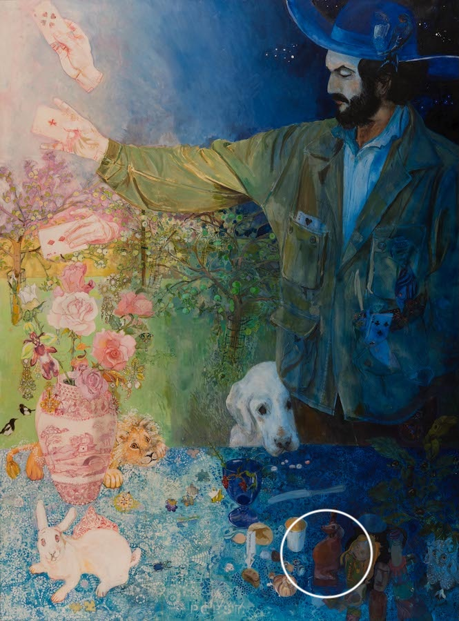
Christiane painted him in the same spectrum as Helena's wardrobe; with the soft pink and red to the left in the light, and the dark navy blue to the right in the darkness, his head making contact with the starry night sky. His closest partner depicted him as an illusionist who depended on misdirection, on obscured details moved from the side, on the arrival of something that did not appear threatening until it had already landed. Kubrick spent decades showing us how the knight moves, film after film. In his final act, Eyes Wide Shut, he lets the knight move inside the family itself, and once it has, the game is over.
•••
If you’ve made it this far, and this changed how you perceive this film, it would mean the world if you would support the work with a coffee (or a cold one!) here: https://buymeacoffee.com/daeclan
To encourage future explorations or support the work, donations are genuinely appreciated, but I'll probably do it anyway for the love of the game. Thanks for going through this with me.